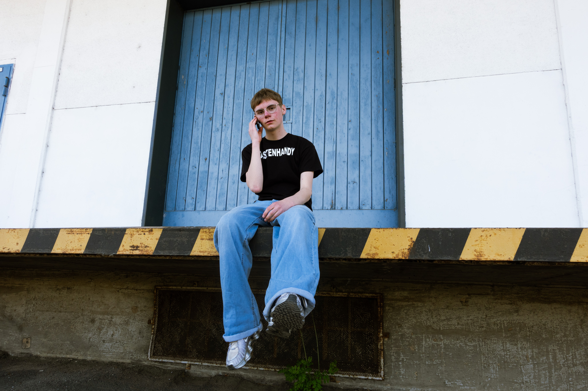

Über Nino
Nino ist ein 16 jähriger Rap-Indie Artist aus Kassel. Seit er 2025 mit seinem Song "Tastenhandy" viral ging, veröffentlichte er noch im selben Jahr sein erstes Mixtape. Anfang 2026 spielte er dann sein erstes eigenes und gleich ausverkauftes Konzert im Theatherstübchen in Kassel, wonach leute nurnoch fragen "Wann nächstes Nino Konzert?"
Außerdem veröffentlicht er auf seinem Instagram Kanal (@ninos.visuals)
Videos, die er bearbeitet hat.

Kontroversen
Hier finden sie alle schlimmen Dinge, die Nino getan hat. (Achtung, es ist sehr schrecklich!!!)